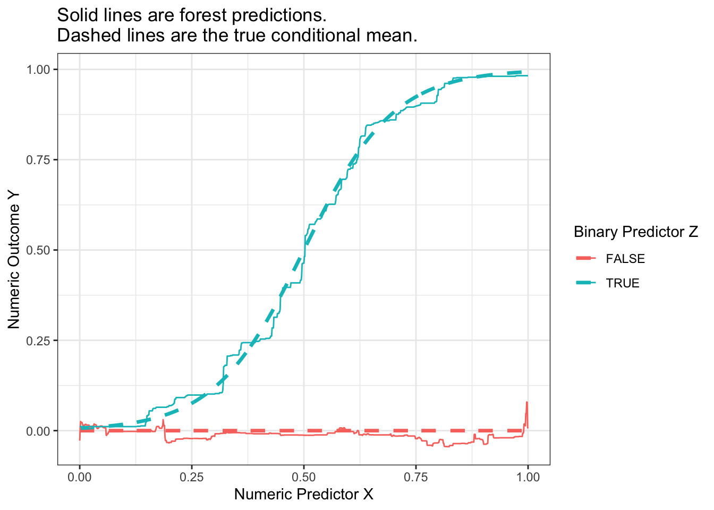
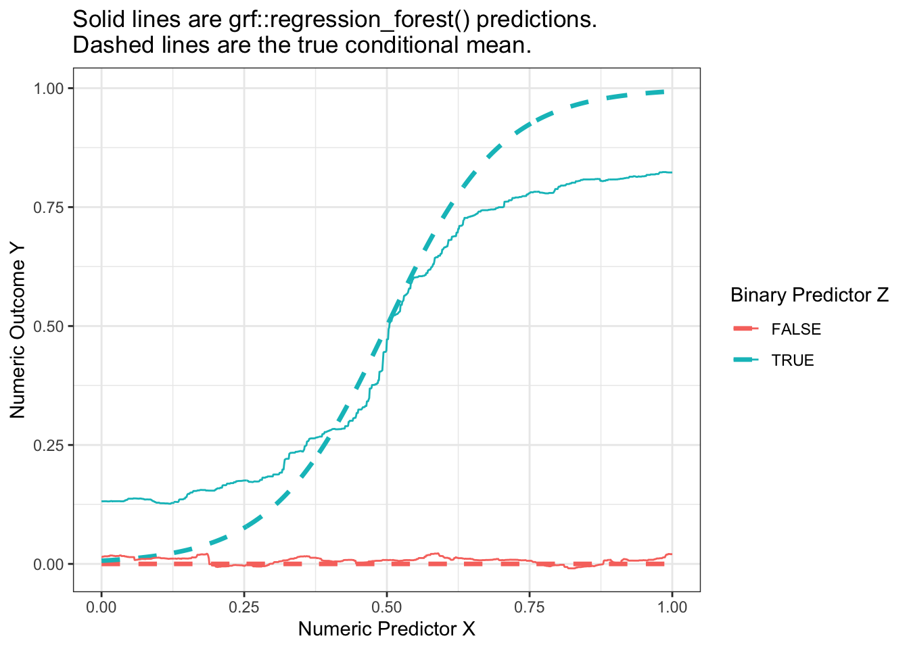

We saw previously that a deep tree is a highly flexible learner, but one that may have poor predictive performance due to its high sampling variance. Random forests (Breiman 2001) resolve this problem in a simple but powerful way: reduce the variance by averaging the predictions from many trees. The forest is the average of the trees.
If one simply estimated a regression tree many times on the same data, every tree would be the same. Instead, each time a random forest grows a tree it proceeds by:
bootstrap a sample \(n\) of the \(n\) observations chosen with replacement
randomly sample some number \(m\) of the variables to consider for splitting
There is an art to selection of the tuning parameter \(m\), as well as the parameters of the tree-growing algorithm. But most packages can select these tuning parameters automatically. The more trees you grow, the less the forest-based predictions will be sensitive to the stochastic variability that comes from the random sampling of data for each tree.
Illustration with bagged forest
To illustrate, we generate data by the same process as on the trees page.
Code
true_conditional_mean <-tibble(z = F, x =seq(0,1,.001)) |>bind_rows(tibble(z = T, x =seq(0,1,.001))) |>mutate(mu = z *plogis(10* (x - .5)))simulate <-function(sample_size) {tibble(z = F, x =seq(0,1,.001)) |>bind_rows(tibble(z = T, x =seq(0,1,.001))) |>mutate(mu = z *plogis(10* (x - .5))) |>slice_sample(n = sample_size, replace = T) |>mutate(y = mu +rnorm(n(), sd = .1))}simulated_data <-simulate(1000)
For illustration, we will first consider a simple version of random forest that is a bagging estimator: all predictors are included in every tree and variance is created through bagging, or bootstrap aggregating. The code below builds intuition, and the code later using the regression_forest function from the grf package is one way we would actually recommend learning a forest in practice.
tree_estimates <-foreach(tree_index =1:100, .combine ="rbind") %do% {# Draw a bootstrap sample of the data simulated_data_star <- simulated_data |>slice_sample(prop =1, replace = T)# Learn the tree rpart.out <-rpart( y ~ x + z, data = simulated_data_star, # Set tuning parameters to grow a deep treecontrol =rpart.control(minsplit =2, cp =0, maxdepth =4) )# Define data to predict to_predict <-tibble(z = F, x =seq(0,1,.001)) |>bind_rows(tibble(z = T, x =seq(0,1,.001)))# Make predictions predicted <- to_predict |>mutate(yhat =predict(rpart.out, newdata = to_predict),tree_index = tree_index )return(predicted)}
We can then aggregate the tree estimates into a forest prediction by averaging over trees.
Warning: Using `size` aesthetic for lines was deprecated in ggplot2 3.4.0.
ℹ Please use `linewidth` instead.
Code
p_no_points +geom_line(data = forest_estimate,aes(y = yhat) ) +ggtitle("Solid lines are forest predictions.\nDashed lines are the true conditional mean.")

Your turn: A random forest with grf
In practice, it is helpful to work with a function that can choose the tuning parameters of the forest for you. One such function is the regression_forest() function in the grf package.
library(grf)
To illustrate its use, we first produce a matrix X of predictors and a vector Y of outcome values.
X <-model.matrix(~ x + z, data = simulated_data)Y <- simulated_data |>pull(y)
We then estimate the forest with the regression_forest() function, here using the tune.parameters = "all" argument to allow automated tuning of all parameters.
forest <-regression_forest(X = X, Y = Y, tune.parameters ="all")
We can extract one tree from the forest with the get_tree() function and then visualize with the plot() function.
first_tree <-get_tree(forest, index =1)plot(first_tree)
To predict in a new dataset requires a new X matrix,
to_predict <-tibble(z = F, x =seq(0,1,.001)) |>bind_rows(tibble(z = T, x =seq(0,1,.001)))X_to_predict <-model.matrix(~ x + z, data = to_predict)
When we visualize, we see that the forest from the package is also a good approximator of the conditional mean function. It is possible that the bias of this estimated forest arises from tuning parameters that did not grow sufficiently deep trees.
Code
p_no_points +geom_line(data = forest_predicted,aes(y = yhat) ) +ggtitle("Solid lines are grf::regression_forest() predictions.\nDashed lines are the true conditional mean.")

Once you have learned a forest yourself, you might try a regression forest using the baseball_population.csv data or another dataset of your choosing.
Forests as adaptive nearest neighbors
A regression tree can be interpreted as an adaptive nearest-neighbor estimator: the prediction at predictor value \(\vec{x}\) is the average outcome of all its neighbors, where neighbors are defined as all sampled data points that fall in the same leaf as \(\vec{x}\). The estimator is adaptive because the definition of the neighborhood around \(\vec{x}\) was learned from the data.
Random forests can likewise be interpreted as weighted adaptive nearest-neighbor estimators. For each unit \(i\), the predicted value is the average outcome of all other units where each unit \(j\) is weighted by the frequency with which it falls in the same leaf as unit \(i\). Seeing forest-based predictions as a weighted average of other units’ outcomes is a powerful perspective that has led to new advances in forests for uses that go beyond standard regression (Athey, Tibshirani, & Wager 2019).